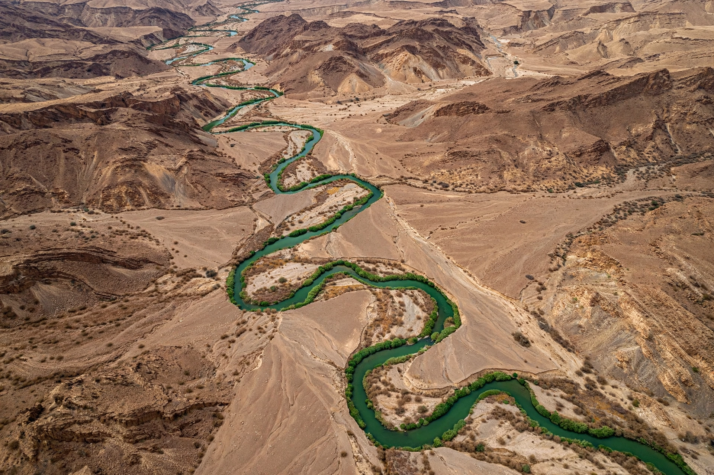

[Image placeholder: The Jordan River winding through the Jordan Valley]The **Jordan River** is a 251 km river in the Middle East flowing from the slopes of Mount Hermon through the Sea of Galilee to the Dead Sea, the lowest point on Earth's land surface. For most of its length it forms the border between Israel and the West Bank to the west and Jordan (and a short stretch of Syria) to the east.
Few rivers carry such religious weight: in the Hebrew Bible the Israelites cross the Jordan into the Promised Land; in the New Testament John baptises Jesus in it, and baptismal sites on both banks (Al-Maghtas in Jordan, Qasr al-Yahud) draw pilgrims. Modern diversion of its headwaters by Israel, Jordan and Syria has cut the lower river to a small, polluted fraction of its historical flow, contributing to the Dead Sea's shrinkage. The river and its aquifers are central to regional water politics and were a major element of the 1994 Israel–Jordan peace treaty.
The Jordan's sources are springs and snowmelt streams — the Hasbani, Banias and Dan — joining in the Hula Valley before entering the Sea of Galilee (Lake Tiberias) at about 210 m below sea level. Below the lake the river meanders intensely through the Zor floodplain within the wider Ghor valley, descending to the Dead Sea at roughly 430 m below sea level.